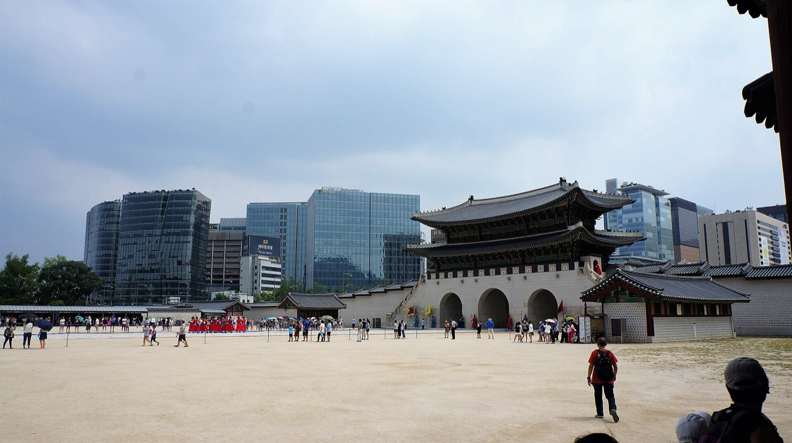
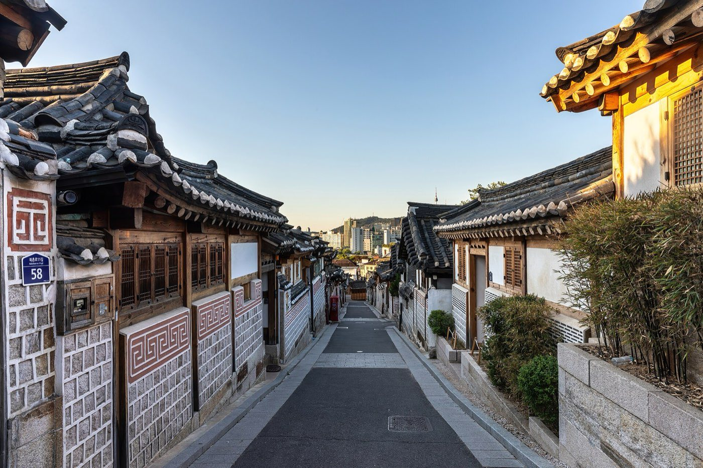
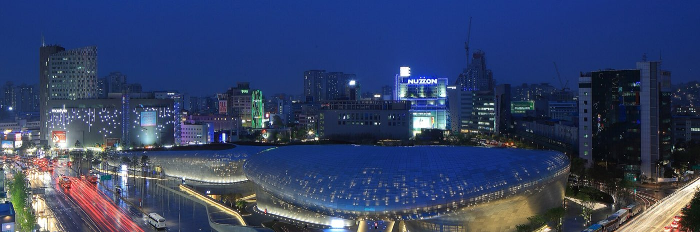

Seoul · 3 days
3 Days in Seoul: What You Actually Have to See
Seoul doesn't hand you a hill to climb or a storm window to dodge. It hands you a curfew. Since November 2024, the residential lanes of Bukchon Hanok Village are legally closed to tourists from 5pm to 10am, with a fine for anyone who lingers, and Gyeongbokgung and its sister palaces shut for the day not long after. That's the heritage half of the city, and it runs on a hard daytime clock. The other half, Dongdaemun's markets, Myeongdong's shopping strips, the view from Namsan, barely exists before dark and in Dongdaemun's case never actually closes. So this plan front-loads the palaces and the hanok lanes into the hours before 5pm and lets the after-dark city take everything that's left. Here's that shape, plus which reservations to lock before you land.

Most cities that dictate a trip's order do it with geography or weather. Seoul does it with an ordinance. Bukchon Hanok Village's most photographed lane, Bukchon-ro 11-gil, sits inside a residential neighborhood where people still live, and after years of tour groups treating the alleys like a theme park, the ward office designated the densest stretch a Red Zone: no tourist entry from 5pm to 10am, guesthouse guests excepted, with a ₩100,000 fine for anyone who stays past the cutoff or wanders in during the closed hours. Gyeongbokgung and its three sister palaces, Changdeokgung, Changgyeonggung and Deoksugung, don't carry a fine, but they close for the day not much later, with last admission 30 to 90 minutes ahead of that depending on the season. That's the whole heritage core of the city running on a hard stop somewhere in the late afternoon.
Everything the palaces and the hanok lanes aren't is on the opposite clock. Myeongdong's shopping strip and street food stalls thicken after the workday ends. Namsan and N Seoul Tower are built for a night view, not a daytime one. Dongdaemun's retail complexes run roughly 10:30am to 5am, and its wholesale malls behind them operate through the night on purpose, since that's when the buyers come. None of that is closed if you arrive at 6pm; most of it is just getting started. So the split isn't subtle: mornings and early afternoons belong to the palaces and the hanok village, and everything after the 5pm cutoff belongs to a different city that was barely open a few hours earlier.
A fined curfew, not just a closing time, splits Seoul into two cities on two clocks. Bukchon Hanok Village's residential lanes are legally off-limits to tourists from 5pm to 10am, and the palaces close for the day around the same window. Dongdaemun, Myeongdong and Namsan barely start until after that cutoff, and Dongdaemun's wholesale malls run straight through the night. This itinerary puts the heritage sites in the morning and early afternoon and lets the after-dark city absorb every evening.
Day 1 — Gyeongbokgung before the crowds, Bukchon before the curfew
Start at Gyeongbokgung as close to opening as the trip allows. It's the largest of the Five Grand Palaces and the one every itinerary leads with for a reason: the changing-of-the-guard ceremony at the Gwanghwamun gate runs a couple of times a morning, and the palace grounds are calm for roughly the first hour before tour groups arrive. Entry is free for anyone wearing a hanbok, rented from one of the shops lining the approach road, which is also the easiest way to get past the ticket line entirely. The palace and its three sister sites all close on Mondays, so check the calendar date before building this day around it, not just the day of the week.
From Gyeongbokgung's east side, it's a short walk uphill into Bukchon Hanok Village, and this is the piece of the day with a hard deadline. The Red Zone around Bukchon-ro 11-gil, the alley with the tightest cluster of residential hanok, is closed to visitors outside 10am to 5pm, fine enforced. Arrive with time to actually look, not rushed against the cutoff, and treat 5pm as a real deadline rather than a suggestion: staff and local monitors patrol on busy days. The looser Orange Zone streets nearby, Bukchon-ro 5-gil and Gyedong-gil, mix cafes and shops in with the houses and aren't time-restricted the same way, so they're the fallback if the light or the crowds make Bukchon-ro 11-gil not worth the timing.
Once 5pm passes and the hanok lanes are off-limits, head downhill into Insadong for dinner. It's a five-to-ten-minute walk from Bukchon's southern edge, thick with tea houses and galleries, and unlike the village it has no curfew of its own.
The must-sees
Everything here runs on a clock; be out of Bukchon's Red Zone by 5pm.

Day 2 — Changdeokgung's Secret Garden, then Dongdaemun after dark
Changdeokgung is the second palace on this trip and the one worth booking ahead for. The Secret Garden behind the main halls is only accessible on a guided tour, capped at 50 people and running on a fixed schedule, with English tours typically at 10:30, 11:30, 14:30 and 15:30 in the warmer months and a shorter roster in winter. Fifty online reservations open six days ahead with no payment required; the other fifty are sold on-site, first come. Either way, this is not a walk-up visit like Gyeongbokgung's grounds, so pick the slot before landing rather than hoping one's available same-day.
After the garden tour, Gwangjang Market is a 15-to-20-minute taxi or two subway stops away and makes an easy lunch. It's one of Korea's oldest markets, the stalls generally running 8:30am to 11pm, though a fair share don't actually open until mid-morning, so this isn't a breakfast stop. Arrive before noon if the goal is bindaetteok and mayak gimbap without a lunchtime line.
Save Dongdaemun for after dark, since that's genuinely when it turns on. The retail complexes around Dongdaemun Design Plaza run roughly 10:30am to 5am, and the older wholesale buildings behind them keep hours built for buyers, not tourists, often not opening until 8pm and running till dawn. The plaza's undulating steel shell is lit at night and worth seeing on its own, independent of whether anything gets bought. This is the day's answer to the 5pm cutoff on Day 1: instead of racing a curfew, the evening here is the point.
The must-sees
One booked tour in the morning; the evening deliberately runs late.

Day 3 — Namsan and Myeongdong, or the DMZ if it was booked ahead
This is the day to fork based on what got booked before the trip started, because the DMZ genuinely can't be added on a whim. Standard tours to the Third Tunnel, Dora Observatory and Imjingak need roughly 3 to 7 days' advance booking so the operator can clear names with the relevant military units; the Joint Security Area tour, the one that actually crosses into the shared building at Panmunjom, needs a full passport copy submitted for UN Command registration, generally 5 to 7 days out and longer in peak season. If neither was arranged ahead of arrival, this day stays in the city; if the JSA tour was booked, it takes the whole day and the rest of this itinerary shifts to fill whatever's left of the trip.
Without a DMZ tour, spend the day on the side of Seoul that runs on no schedule at all. Namsan Park and N Seoul Tower are a cable car or a bus ride up, and while the tower is open through the day, the view is built for evening, when the city's lights replace the haze that often sits over Seoul by afternoon. Myeongdong, at the base of the hill, is a shopping and street-food strip that, like Dongdaemun, is at its fullest after the workday ends. Neither has a Bukchon-style curfew or a palace-style closing time; they're the fallback for whichever hours the rest of the trip didn't use.
If the trip includes a Monday, this is the day to land it on, since Namsan and Myeongdong don't observe the palaces' closure and neither does Dongdaemun.
The must-sees
Fork the day: DMZ if booked days ahead, Namsan and Myeongdong if not.
What to book, and how far ahead
| What | Booking window | So |
|---|---|---|
| Changdeokgung Secret Garden | Guided tour only, capped at 50 per online slot | Reserve as soon as the date is fixed; 6-day window opens on a rolling basis |
| Bukchon Hanok Village (Red Zone) | No booking, but tourist entry banned 5pm–10am with a fine | Plan the visit inside the window; don't let it run past the cutoff |
| DMZ Third Tunnel / Observatory tours | Standard operator booking, roughly 3–7 days ahead | Arrange before landing if this day matters |
| JSA (Panmunjom) tour | Passport copy submitted for UN Command registration, 5–7+ days ahead | Book earliest of everything on this list if wanted at all |
| Dongdaemun, Myeongdong, Namsan | No booking, open into the night | The fallback for any evening, and for Day 3 if the DMZ wasn't arranged |
What three days does not cover
Cutting deliberately beats rushing. These need more time than a three-day, curfew-shaped trip has:
- Gyeongbokgung's National Folk Museum and National Palace Museum, both inside the palace grounds — worth an hour each, but this trip's morning is already built around the palace itself and the walk into Bukchon.
- A full JSA tour on top of the rest of Day 3 — it runs most of a day on its own and, once booked, effectively replaces Namsan and Myeongdong rather than sitting alongside them.
- Ihwa Mural Village and a slower Ikseon-dong wander — genuinely worth doing, but neither has an obvious gap in a schedule already anchored by a curfew and a guided-tour booking.
- A Han River evening picnic at Yeouido or Banpo Bridge — the fountain and the skyline view reward unhurried time this itinerary has already spent on Dongdaemun and Myeongdong.
Common questions about 3 days in Seoul
Is 3 days enough for Seoul?
For the essentials, yes. Three days covers Gyeongbokgung and Bukchon Hanok Village, Changdeokgung's Secret Garden and Gwangjang Market, Dongdaemun after dark, and either the DMZ or Namsan and Myeongdong. It doesn't stretch to a full JSA tour on top of the city sights, the palace museums, or an unhurried Han River evening, each of which needs time this itinerary has already committed elsewhere.
What time does Bukchon Hanok Village close to tourists?
The Red Zone around Bukchon-ro 11-gil, the residential lane with the densest cluster of hanok, is closed to tourist entry from 5pm to 10am, with a ₩100,000 fine for anyone who stays past the cutoff, a rule in effect since November 2024. Guesthouse guests are exempt. Looser Orange Zone streets nearby aren't restricted the same way.
Is Dongdaemun Market open 24 hours?
Parts of it, yes. The retail complexes generally run from about 10:30am to 5am, and the older wholesale malls behind them often don't open until evening and run through the night, since that's when buyers come. It's the one part of this itinerary genuinely built for a late visit.
Do I need to book Changdeokgung's Secret Garden in advance?
Yes. Unlike the rest of the palace, the Secret Garden is accessible only on a guided tour, capped at 50 people per slot, with English tours running a few times a day. Fifty tickets open online on a rolling basis about six days ahead with no payment required; the other fifty sell on-site, so a walk-up visit isn't guaranteed.
How far ahead do I need to book a DMZ tour from Seoul?
Standard tours to the Third Tunnel, Dora Observatory and Imjingak need roughly 3 to 7 days for the operator to clear names with the relevant military units. The JSA tour into Panmunjom itself is stricter: it requires a passport copy submitted for UN Command registration, generally 5 to 7 days out and longer in peak season, so it's the first thing on this itinerary worth booking.
Do all of Seoul's palaces close on the same day?
Yes. Gyeongbokgung, Changdeokgung, Changgyeonggung and Deoksugung all close on Mondays, so a Monday inside a three-day Seoul trip removes the palace half of the plan entirely. Bukchon Hanok Village, Dongdaemun, Myeongdong and Namsan don't observe that closure, which makes a Monday the day to spend on them instead.
Tailored to your trip
Travelling to Seoul? Plan your trip around your real arrival and departure times.
Download iOS App